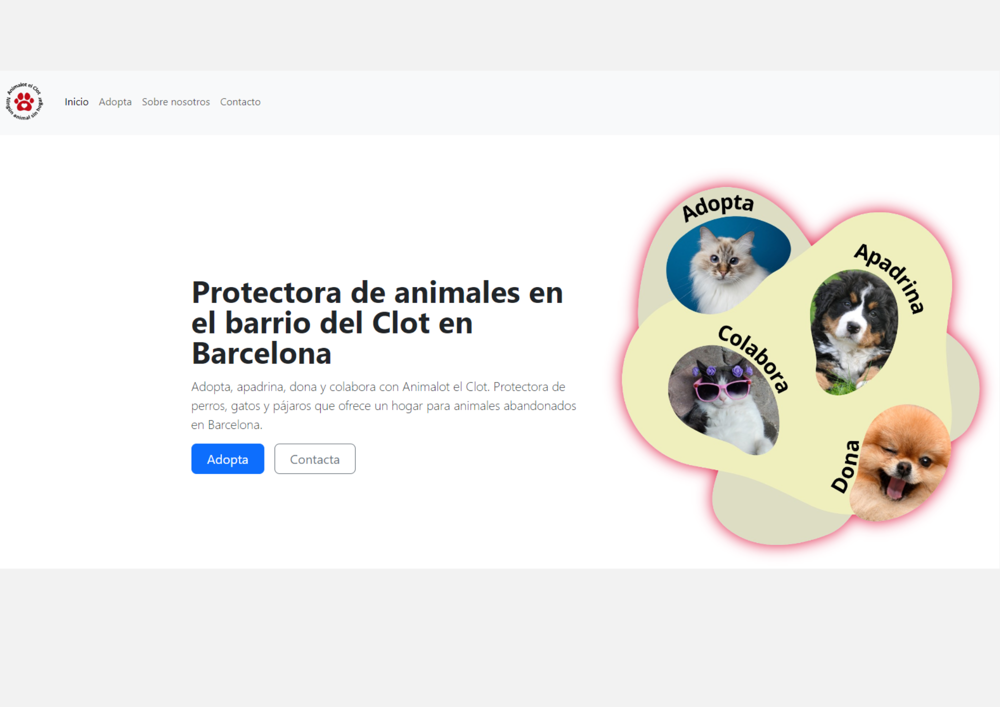

Animalot el Clot
Animalot el Clot is a web platform for animal adoption, developed as part of the second-year Web Development project. It allows users to browse a list of animals available for adoption, including 4 cats, 4 dogs, and 2 birds, and interact to have these animals adopted by predefined users.
The project has the following educational goals: Practice using HTML5 and CSS to create web interfaces. Apply Bootstrap to achieve a fluid and responsive design. Use Vanilla JavaScript to add interactivity to the page. Manage information for people and animals using data arrays.
HTML5, CSS, Bootstrap, JavaScript Vanilla.
Try the live demo here.